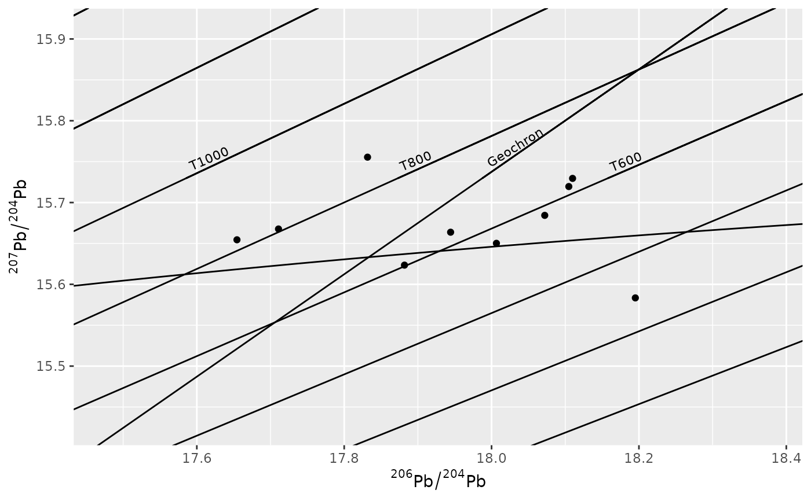
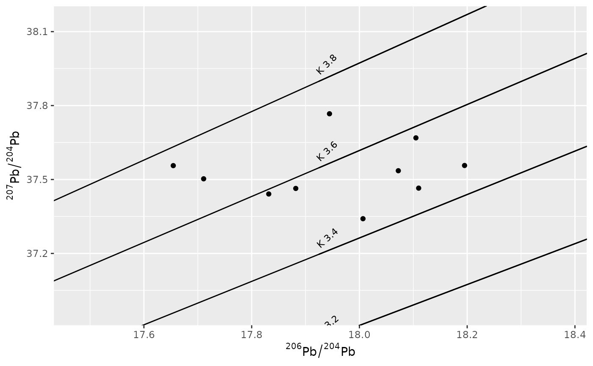
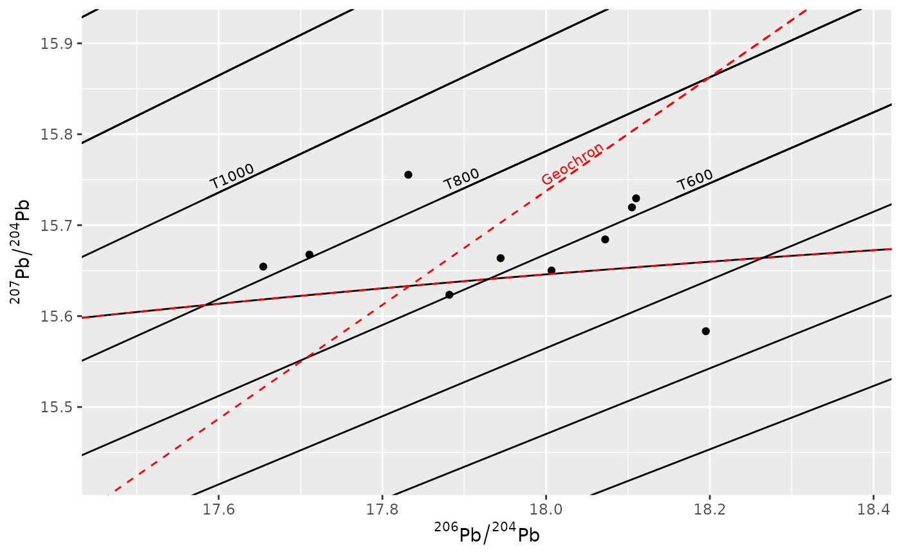

This Geom is used for drawing and labeling isochron, geochron, and kappa lines used for isotope age model referencing used in lead isotope biplots. The lines follows the model used by Stacey and Kramers (1975).
Usage
geom_sk_lines(
mapping = NULL,
data = NULL,
system = c("76", "86"),
Mu1 = 10,
Kappa = 4,
...
)
geom_sk_labels(
mapping = NULL,
data = NULL,
system = "76",
Mu1 = 10,
Kappa = 4,
...
)Arguments
- mapping
Set of aesthetic mappings created by
aes(). If specified andinherit.aes = TRUE(the default), it is combined with the default mapping at the top level of the plot. You must supplymappingif there is no plot mapping.- data
The data to be displayed in this layer. There are three options:
If
NULL, the default, the data is inherited from the plot data as specified in the call toggplot().A
data.frame, or other object, will override the plot data. All objects will be fortified to produce a data frame. Seefortify()for which variables will be created.A
functionwill be called with a single argument, the plot data. The return value must be adata.frame, and will be used as the layer data. Afunctioncan be created from aformula(e.g.~ head(.x, 10)).- system
Character "76" or "86" defining the isotope plot axis (default "76").
- Mu1
Second-stage 238U/204Pb ratio (default 10).
- Kappa
Second-stage 232Th/238U ratio (default 4).
- ...
Other arguments passed on to
layer()'sparamsargument. These arguments broadly fall into one of 4 categories below. Notably, further arguments to thepositionargument, or aesthetics that are required can not be passed through.... Unknown arguments that are not part of the 4 categories below are ignored.Static aesthetics that are not mapped to a scale, but are at a fixed value and apply to the layer as a whole. For example,
colour = "red"orlinewidth = 3. The geom's documentation has an Aesthetics section that lists the available options. The 'required' aesthetics cannot be passed on to theparams. Please note that while passing unmapped aesthetics as vectors is technically possible, the order and required length is not guaranteed to be parallel to the input data.When constructing a layer using a
stat_*()function, the...argument can be used to pass on parameters to thegeompart of the layer. An example of this isstat_density(geom = "area", outline.type = "both"). The geom's documentation lists which parameters it can accept.Inversely, when constructing a layer using a
geom_*()function, the...argument can be used to pass on parameters to thestatpart of the layer. An example of this isgeom_area(stat = "density", adjust = 0.5). The stat's documentation lists which parameters it can accept.The
key_glyphargument oflayer()may also be passed on through.... This can be one of the functions described as key glyphs, to change the display of the layer in the legend.
Details
The plotting system follows the convention of showing geochron and isochron lines for the 207Pb/204Pb vs. 206Pb/204Pb plot and the kappa lines for 208Pb/204Pb vs. 206Pb/204Pb plot.
Note
Currently the plot will scale the xlim and ylim to their maximum bounds. To
prevent this use coord_cartesian(xlim, ylim)
to force the axis range to the desiered values.
Additional parameters
TiInitial time of the second stage in years (default 3.7 Ga).intervalTime interval for isochron labels in years (default 200 Ma).show_geochronLogical; should the Geochron be plotted? (defaultTRUE).show_isochronsLogical; should time isochrons be plotted? (defaultTRUE)kappa_listNumeric vector of Kappa values to plot in "86" system.
References
Stacey, J.S. and Kramers, J.D. (1975) Approximation of terrestrial lead isotope evolution by a two-stage model. Earth and Planetary Science Letters 26(2), pp. 207–221. https://dx.doi.org/10.1016/0012-821X(75)90088-6.
See also
Other Pb isotope functions:
age_models
Aesthetics
geom_path() understands the following aesthetics. Required aesthetics are displayed in bold and defaults are displayed for optional aesthetics:
| • | x | |
| • | y | |
| • | alpha | → NA |
| • | colour | → via theme() |
| • | group | → inferred |
| • | linetype | → via theme() |
| • | linewidth | → via theme() |
Learn more about setting these aesthetics in vignette("ggplot2-specs").
Examples
# example code
library(ggplot2)
set.seed(50)
df <- data.frame(
pb64 = rnorm(10, 18,0.2),
pb74 = rnorm(10, 15.7,0.1),
pb84 = rnorm(10, 37.5,0.1)
)
# Creating the Pb 207/204~206/204 plot
ggplot(df, aes(x = pb64, y = pb74)) +
geom_point() +
geom_sk_lines(system = "76") +
geom_sk_labels(system = "76") +
coord_cartesian(
xlim = range(df$pb64) * c(.99, 1.01),
ylim = range(df$pb74) * c(.99, 1.01)
) +
labs(
x = expression({}^206*Pb / {}^204*Pb),
y = expression({}^207*Pb / {}^204*Pb),
)

# Creating the Pb 208/204~206/204 plot
ggplot(df, aes(x = pb64, y = pb84)) +
geom_point() +
geom_sk_lines(system = "86",
show_isochrons = FALSE, show_geochron = FALSE,
kappa_list = c(3.2, 3.4, 3.6, 3.8)) +
geom_sk_labels(system = "86",
show_isochrons = FALSE, show_geochron = FALSE,
kappa_list = c(3.2, 3.4, 3.6, 3.8)) +
coord_cartesian(
xlim = range(df$pb64) * c(.99, 1.01),
ylim = range(df$pb84) * c(.99, 1.01)
) +
labs(
x = expression({}^206*Pb / {}^204*Pb),
y = expression({}^207*Pb / {}^204*Pb),
)

# Creating the Pb 207/204~206/204 plot with a seperate Geocrone color
ggplot(df, aes(x = pb64, y = pb74)) +
geom_point() +
geom_sk_lines(system = "76", show_geochron = FALSE) +
geom_sk_lines(system = "76", show_isochrons = FALSE,
color = 'red', linetype = 'dashed') +
geom_sk_labels(system = "76", show_geochron = FALSE) +
geom_sk_labels(system = "76", show_isochrons = FALSE, color = 'red') +
coord_cartesian(
xlim = range(df$pb64) * c(.99, 1.01),
ylim = range(df$pb74) * c(.99, 1.01)
) +
labs(
x = expression({}^206*Pb / {}^204*Pb),
y = expression({}^207*Pb / {}^204*Pb),
)

rm(df)